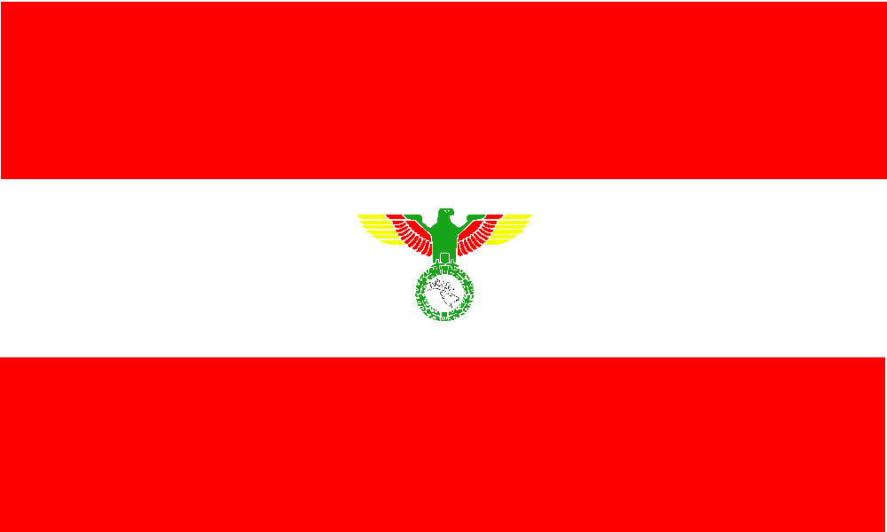
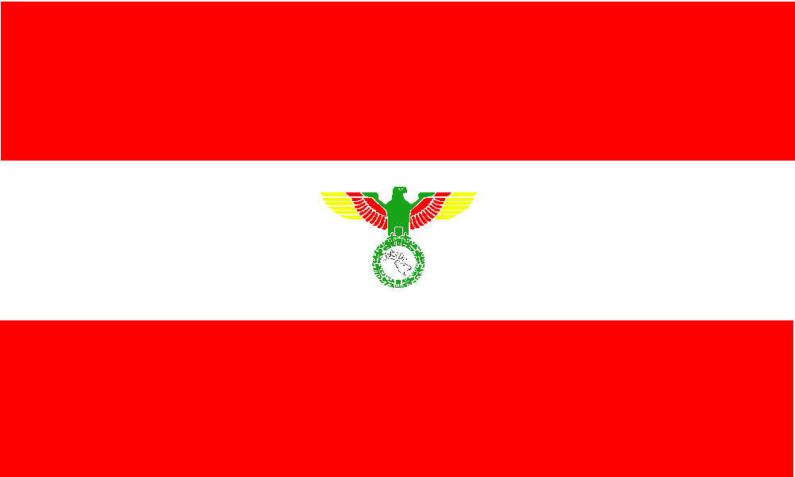

History of Jabir Empire

Jabir Empire has been formed by "His Imperial Majesty Emperor Muhammadreza I" , and one of the reasons of forming this empire was independentism. Also, These kinds of nations are models of future-world styled nations, an unhabitated territory with global citizens.
Etymology
Jabir (Pronounced "Jabeeer"), is a kind of Indo-Iranian deer, can be found in southern parts of Iran, and also can be found in Pakistan, India. We have used this symbol in our flag, too.

Pan Jabirism
Pan Jabirism is our official ideology, as fact we have ideologic government. Pan Jabirist Party, aka PJP is our ruling party. Pan Jabirist colors are Green,Red and Yellow, used in or Coat of Arms and Alternative flag.

Pan Jabirist Eagle
Pan Jabirist eagle is our coat of arms, This eagle was used by eastern empires like Persian Empire, Fatimid Empire and Aryavarta.
Alternative flags
 
